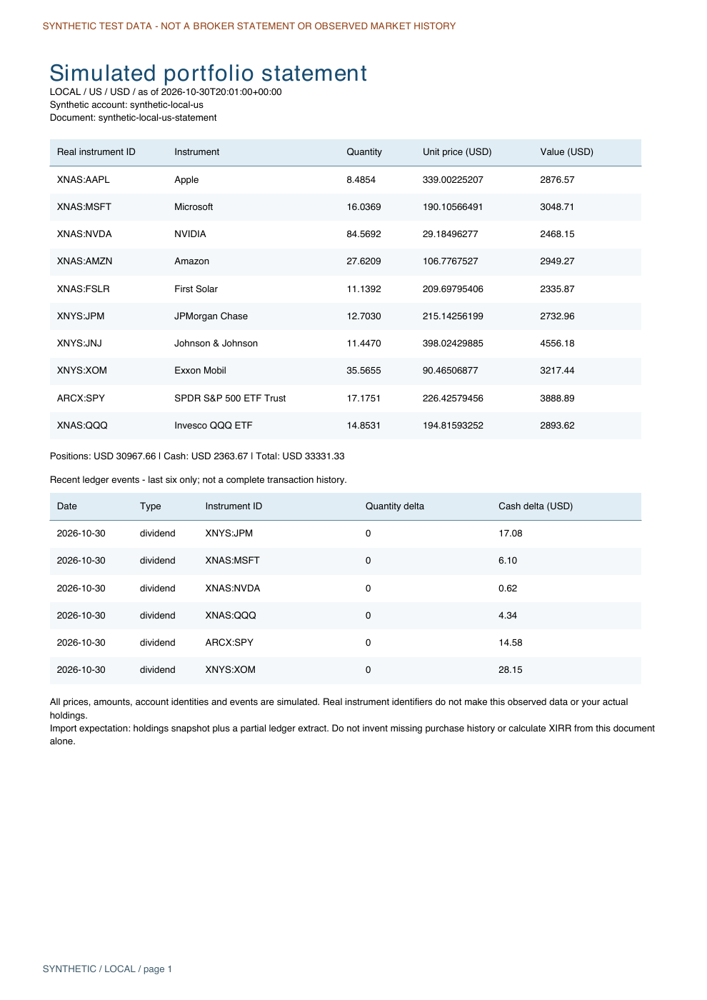
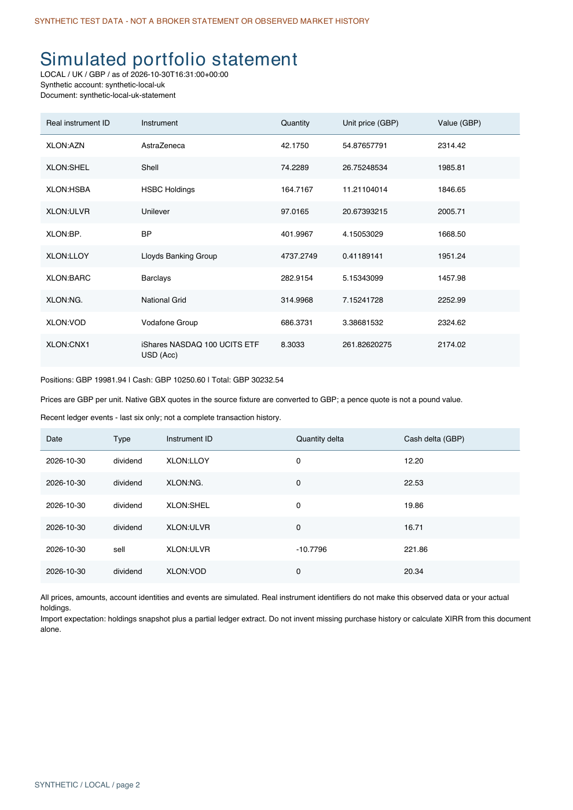

Synthetic test data
All prices, balances, transactions and costs are simulated. Real instrument IDs; no actual holdings or billed costs.
Separate local/dev files for US, UK and India. Generic sample layouts; real broker support and OCR robustness remain to be validated.
LOCAL fixtures
Three-market PDF · Expected extraction records · Agent costs / alerts / upload scenarios · Manifest





DEV fixtures
Three-market PDF · Expected extraction records · Agent costs / alerts / upload scenarios · Manifest